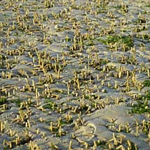
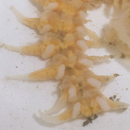
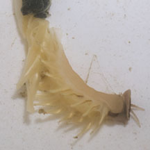

|
|
| worms text index | photo index |
|
worms > Phylum Annelida >
Class Polychaeta
|
| Straw
tubeworm awaiting identification* Family Chaetopteridae updated Oct 2016 Where seen? This worm is commonly seen on sand bars at the low water mark. The tubes resemble drinking straws. Features: The tubes are medium, about 0.5cm in diameter, similar in dimension to a typical drinking straw. Often found in large numbers covering large areas, the tubes usually regularly separated from one another (not tightly clustered). The actual animals are complex with 'wings' and other extensions. |
 Regularly separated, not tightly clustered. Chek Jawa, Jan 08 |
 Changi, Apr 12 |
 |
 |
*Species are difficult to positively identify without close examination.
On this website, they are grouped by external features for convenience of display.
| Straw tubeworms on Singapore shores |
On wildsingapore
flickr
|
| Other sightings on Singapore shores |
Links
References
|